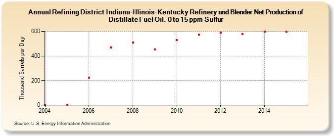

|
Download Data (XLS File) |
|
||||||||
|  | ||||||||
| Refining District Indiana-Illinois-Kentucky Refinery and Blender Net Production of Distillate Fuel Oil, 0 to 15 ppm Sulfur (Thousand Barrels per Day) | ||||||||
| Decade | Year-0 | Year-1 | Year-2 | Year-3 | Year-4 | Year-5 | Year-6 | Year-7 | Year-8 | Year-9 |
|---|---|---|---|---|---|---|---|---|---|---|
| 2000's | 3 | 4 | 225 | 471 | 511 | 454 | ||||
| 2010's | 530 | 572 | 588 | 577 | 598 | 598 |
| - = No Data Reported; -- = Not Applicable; NA = Not Available; W = Withheld to avoid disclosure of individual company data. |
| Release Date: 1/31/2017 |
| Next Release Date: 9/29/2017 |